To generate rays, we calculated the screen bounds using hfov and vfov and used those to scale the passed in x and y coordinates. We then created a Vector towards the point (x, y, -1) on the sensor surface. We normalized this vector then used the c2w matri to transform it into world coordinates, then used it to create a ray with origin at the camera position and direction of the transformed vector.
To raytrace a pixel, we sampled num_samples different points uniformly across the pixel and generated a ray for each of them. We then averaged the radiance from all of the rays and returned it.
To test triangle intersections, we used the Möller Trumbore algorithm to calculate the t coordinate and the b_1, b_2 variables for the intersection of the ray with the plane in barycentric coordinates. We then checked the barycentric coordinates to make sure that they were between 0 and 1 and added up to 1 to ensure that the intersection was within the triangle.
|
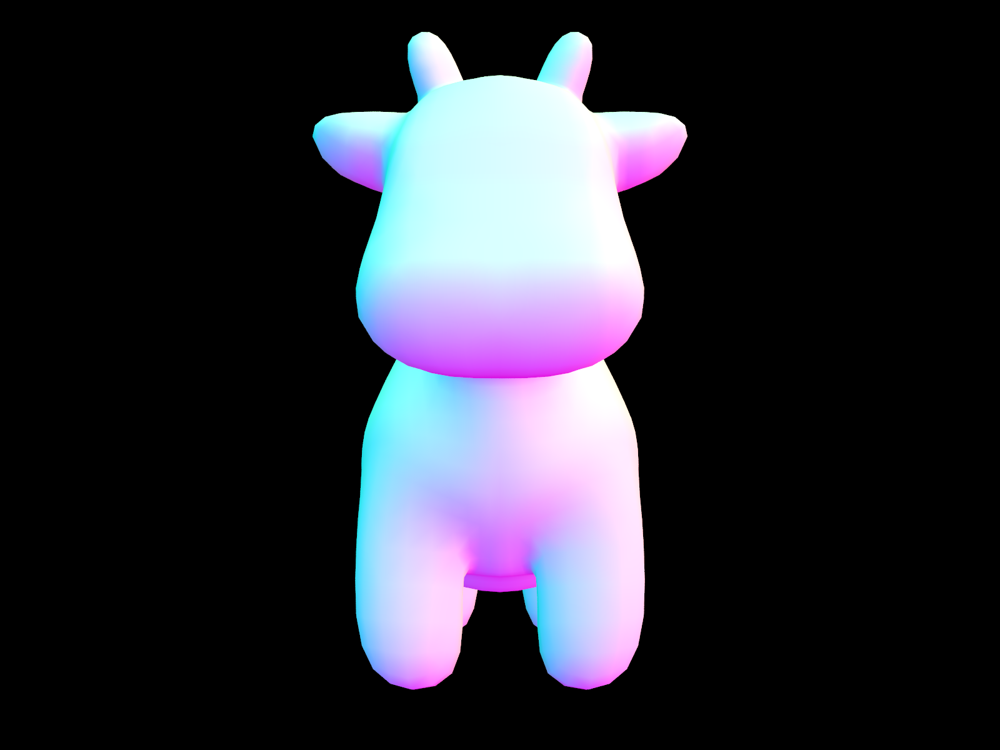
Cow rendered with normal shading.
|
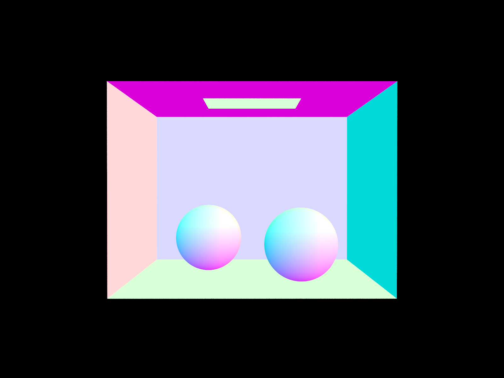
CBSpheres rendered with normal shading.
|
Part 2: BVH Tree
To create a BVH tree for the mesh, we recursively split the list of primitives along the longest axis of
the bounding box. To determine the split position for the axis, we linearly computed the average location of primitives
along this axis. We then used the partition function from the C++ standard library to arrange the primitives into two groups: primitives with values less than the split position,
and primitives with values greater than the split position. We then recursed with the group with values less as "left" group of the node and the group with values greater as the "right" group
of this node. We stop the recursion and create a leaf node when the number of primitives being considered is less than a certain constant.
|
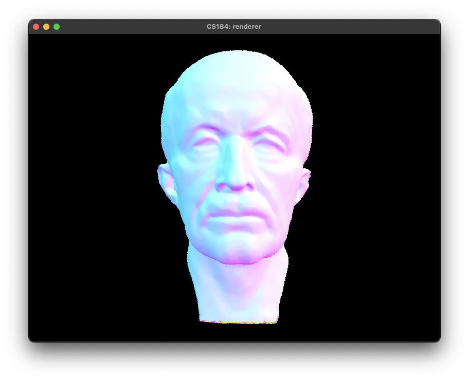
Max Planck picture rendered with bounding-box intersection method
|
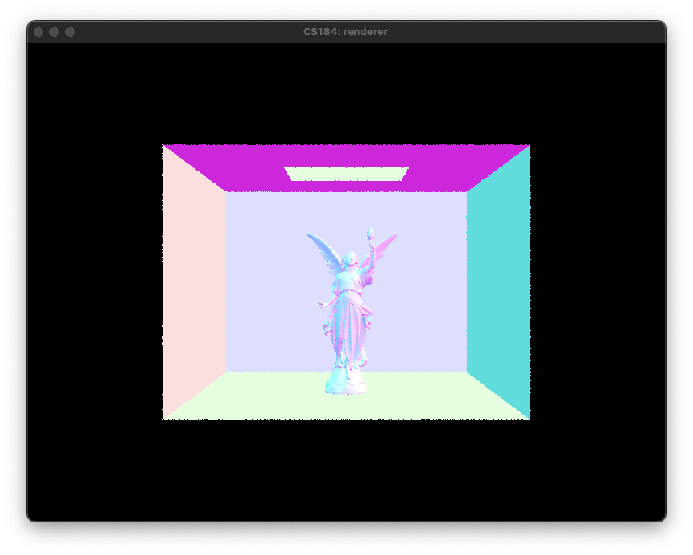
Angel picture rendered with bounding-box intersection method
|
We observed that the BVH tree rendering method gave us considerable speed-ups for the rendering of these images. Specifically, here are some datapoints:
Running on maxplanck.dae: time without bvh: 227.9s, with bvh: .0722s.
cow.dae: without bvh: 19.0832s with bvh: .0273s.
As you can see, the BVH rendering method brings incredible gains in speed. This is because the bounding box method improves upon the asymptotic complexity of the intersection tests considerably. In the naive implementation, each
ray is tested for intersection with each primitive in the scene, giving O(N) asymptotic complexity. In scenes with hundreds of thousands of primitives or more, this quickly becomes infeasibly slow.
With the BVH rendering scheme, the time complexity is brought down to approximately log(N). Instead of intersecting the ray with each and every primitive, we rule out large swathes of possible intersections
by first checking intersection with the bounding boxes of nodes in the BVH tree; if the ray does not intersect a given node's overall box, then we know that it cannot intersect with any of its children.
This allows us to entirely skip intersection tests with large swathes of the primitives. Since our heuristic approximately reduces the number of primitives in each node by half in each level of the recursion,
the runtime becomes approximately log(N).
Part 3: Direct Illumination
In this part of the project, we implemented the capability to render objects which are directly illuminated by a light source. The first method
that we implemented to accomplish this was uniform hemisphere sampling. This method takes in a ray shot out from the viewpoint and an intersection with the object in the
world that it hits. We want to estimate the light that hits the pixel in the viewing window that this ray passes through, so we use the Monte Carlo estimator derived in lecture.
From the intersection point of the ray in world space, we create N sample rays originating from the intersection point that random directions throughout the hemisphere.
For each of these rays, we get the emission of the object it hits, multiply it by the BRDF of the object the original ray hit, and multiply it by the cosine theta of the sample ray direction.
After computing this quantity for each ray, we add each quantity up into a new float and divide it by N, as well as divide it by (1 / 2 * PI), the probability of each ray direction being sampled.
We then return this float as the light value.
The second method we use for direct illumination, importance sampling, is basically the same as hemisphere sampling. The only difference is that instead of shooting the sample rays
randomly in any direction over the hemisphere, we only shoot the rays in the direction of actual light sources. We do this by looping over every light source in the scene
and sampling N random rays from each light source. We create a float value to store the running value of our Monte Carlo estimate as before and add to it each ray's contribution.
Here are some images generated using our implementations of hemisphere sampling and importance sampling. Each image uses 64 samples per pixel, and 32 light rays per pixel.
|
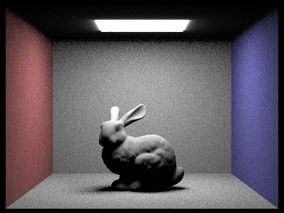
Bunny image rendered with hemispheric sampling..
|
Bunny image rendered with importance sampling.
|
|
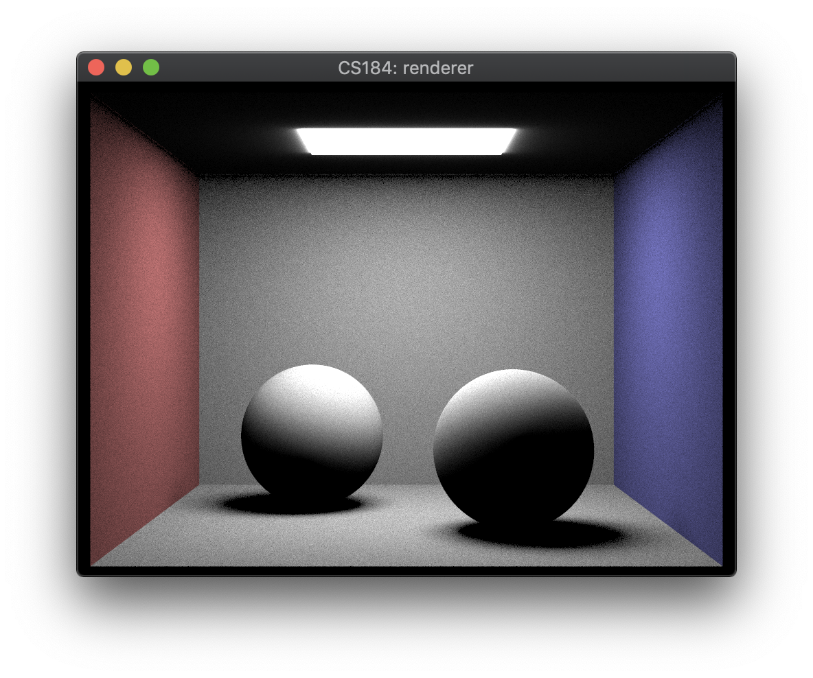
Spheres image rendered with hemispheric sampling.
|
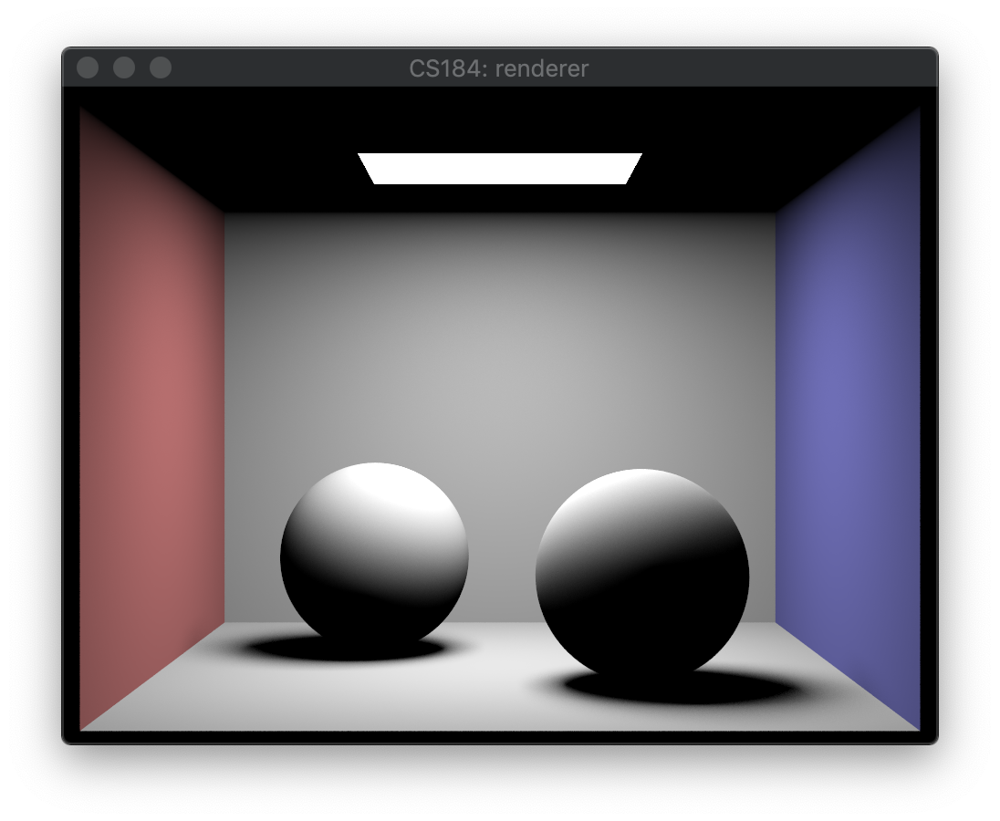
Spheres image rendered with importance sampling.
|
 Banana image rendered with hemispheric sampling. Note that because this scene
uses point light, hemispheric sampling is unable to properly render the illumination!
Banana image rendered with hemispheric sampling. Note that because this scene
uses point light, hemispheric sampling is unable to properly render the illumination!
|
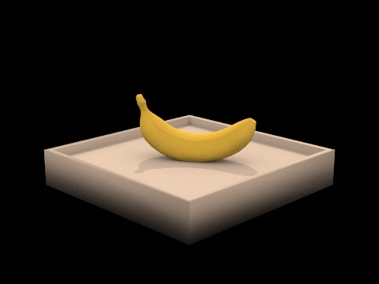
Banana image rendered with importance sampling. Importance sampling works here with point light
because we directly sample rays from each light.
|
The renders displayed here show us that importance sampling is a powerful technique for reducing noise. In addition, the rendering times for these picutres
also show its worth as an optimization technique. For example, the bunny image with hemispheric sampling was rendered in just under 87 seconds. The same scene
was rendered with the same parameters except for using importance sampling, and the time to render reduced to 59 seconds. The same improvements can be seen with
the spheres image, with the hemispheric render taking 117 seconds and the importance render version taking 85 seconds.
Varying the number of light samples
Here are four pictures of the spheres scene, each rendered with one sample per pixel. Each render has 1, 4, 16,
and 64 light rays per sample, respectively. As you can see, noise decreases significantly as we raise the number of light rays
in each sample from 1 to 64.
|
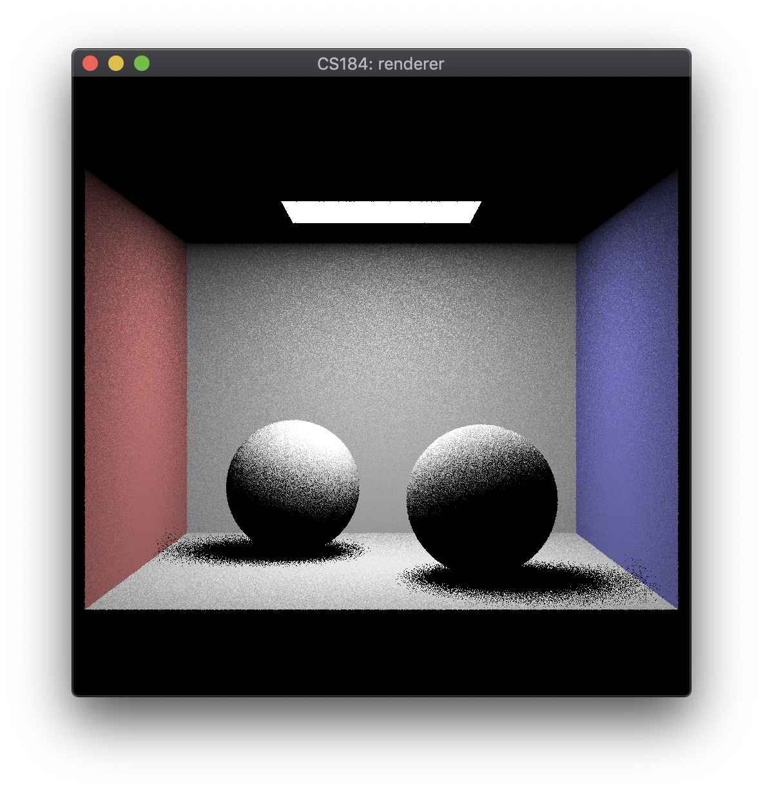
1 light ray per samle
|
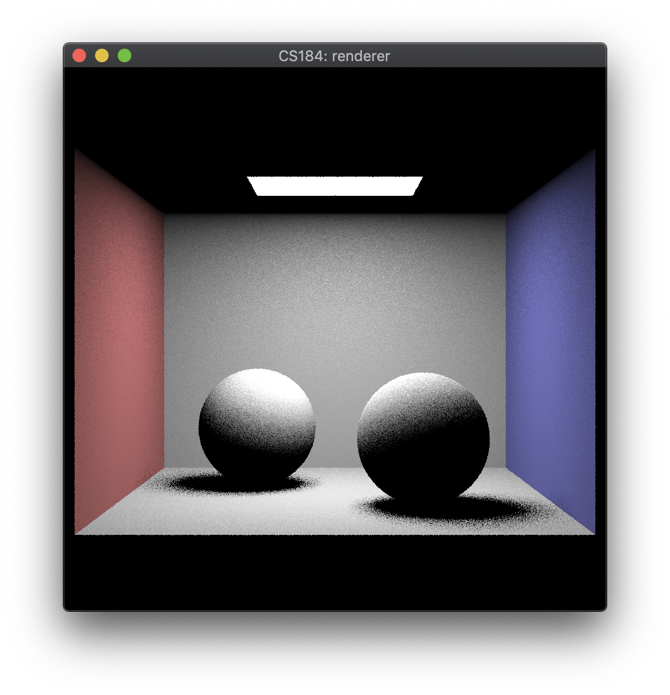
4 light rays per sample
|
|
16 light rays per sample
|
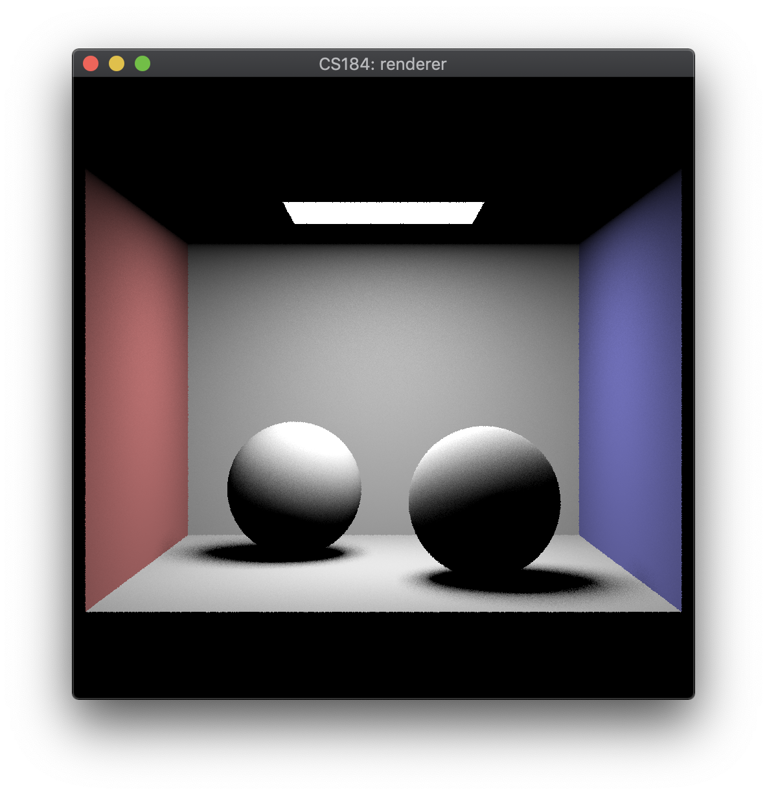
64 light rays per sample
|
Part 4: Indirect Illumination
To add indirect lighting, we first take a ray that has intersected with an object and check if its depth is less than or equal to zero. If it is, we know that we have reached our depth limit and we will not bounce the ray any further. If it is not, we then calculate the direct lighting falling on this point using the one bounce lighting function. We then sample a new incoming ray w_i from the bsdf of our material and calculate the lighting that arrives on that point recursively. We then add this to our direct lighting and return it.
Sample images rendered with global illumination
|
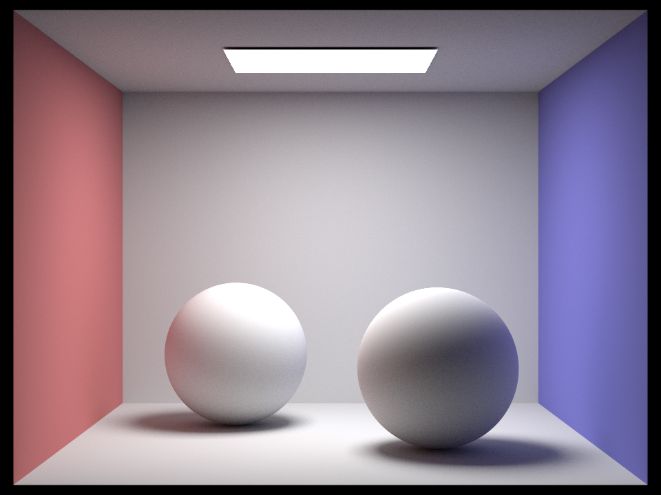
Spheres rendered with 1024 samples per pixel
|
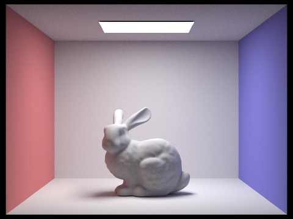
Bunny rendered with 1024 samples per pixel
|
Direct vs Indirect lighting
|
CBSpheres with direct and indirect lighting
|
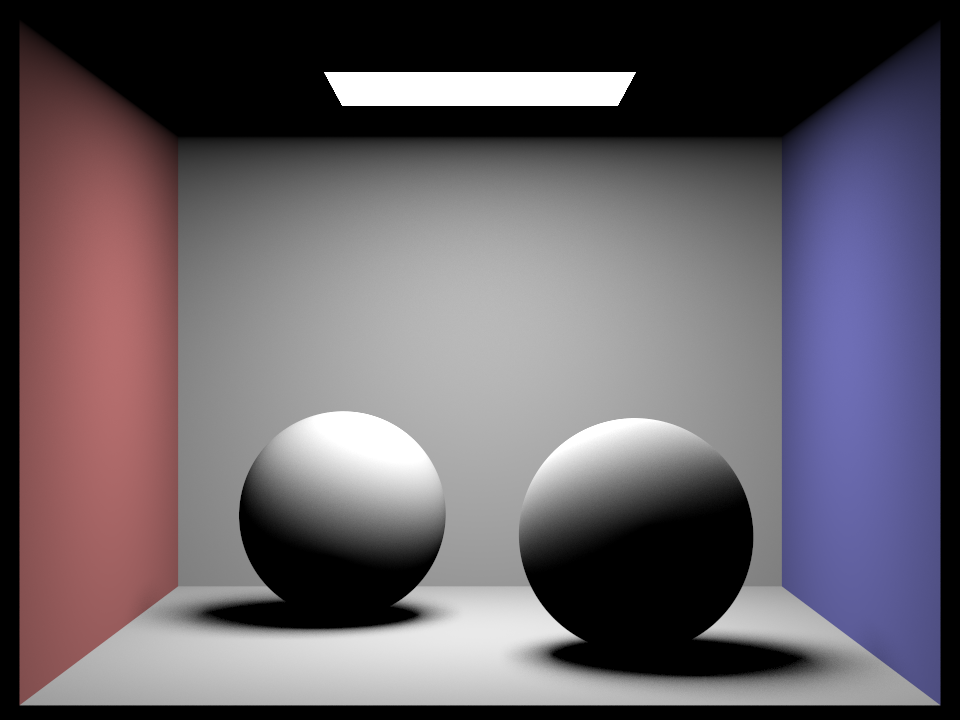
CBSpheres with direct lighting only
|
 CBSpheres with indirect lighting only
CBSpheres with indirect lighting only
|
Varying max ray depth
|
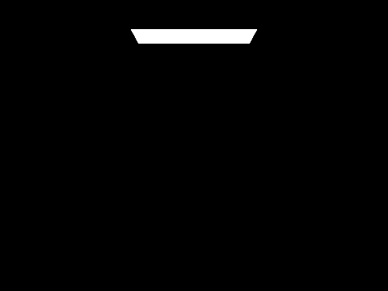
Bunny rendered with 0 bounces
|
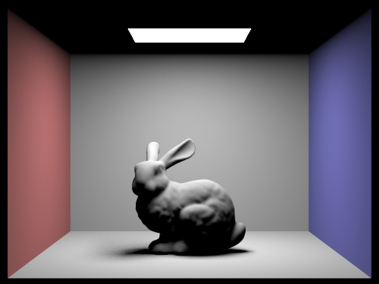
Bunny rendered with 1 bounce
|
|
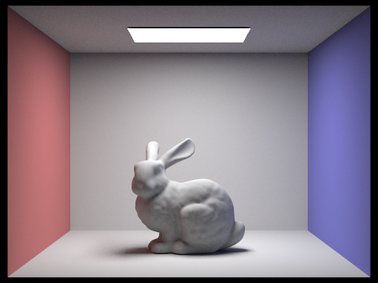
Bunny rendered with 2 bounces
|
Bunny rendered with 3 bounces
|
|
Bunny rendered with 100 bounces
|
Varying Sample per pixel rates
|
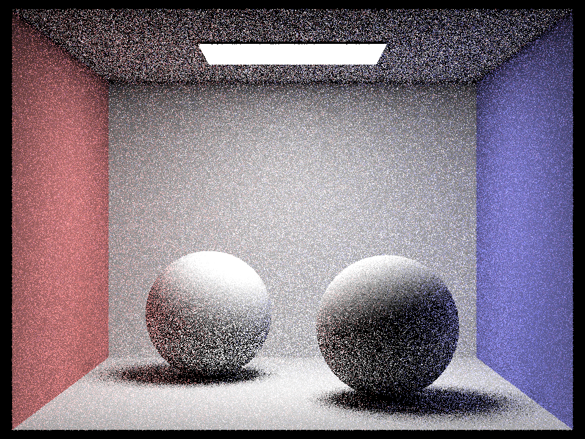
Spheres rendered with 1 sample per pixel
|
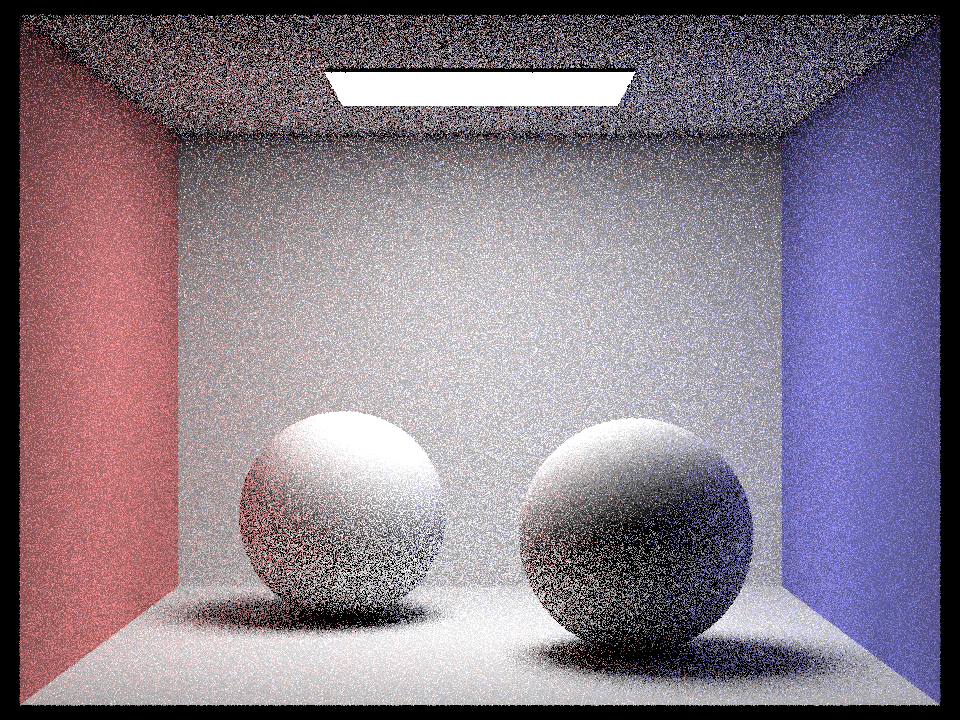
Spheres rendered with 2 samples per pixel
|
|
Spheres rendered with 4 samples per pixel
|
Spheres rendered with 8 samples per pixel
|
|
Spheres rendered with 16 samples per pixel
|
Spheres rendered with 64 samples per pixel
|
|
Spheres rendered with 1024 samples per pixel
|
Part 5: Adaptive Sampling
We use adaptive sampling as a method for getting "just-enough" light samples per pixel in our viewing window, in order to reduce the amount of areas that are undersampled,
or oversampled. We do so by defining a variable I as 1.96 * (standard deviation of the luminance of the light samples) / (square root of the number of samples). While this quantity
is greater than the tolerance times the mean luminance of the samples, we take a batch of k samples, where k is specified by a command line argument. As each sampling batch is added to the estimate,
the mean, variance and quantity I are updated. When I is less than or equal to the tolerance times mean, this means that the pixel's light value has converged to within its true value with high probability,
and we stop sampling. We continue this process on each pixel for the entire render.
Below is a rendering of the bunny with importance sampling and a maximum of 2048 samples per pixel. Adaptive sampling is enabled and most pixels converge & finish before 2048 samples are actually taken.
|
Bunny render.
|
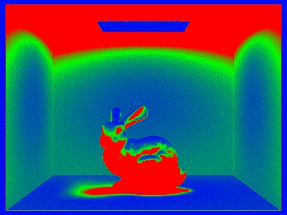
Image showing sampling frequency for each pixel of the bunny image, emphasizing the different sampling rates for pixels in certain areas.
|